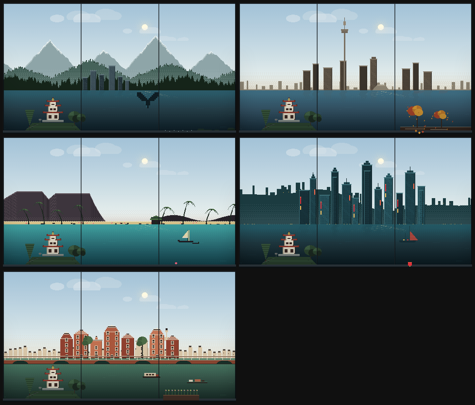
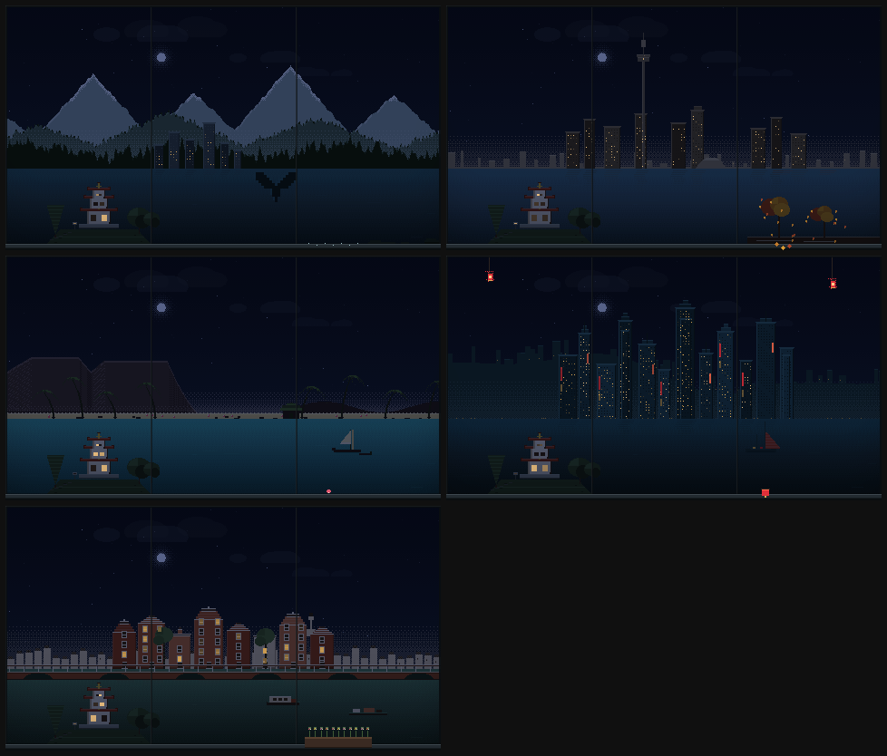

Style prototypes
Three takes on the same brief: the same pagoda garden, five cities, live time and weather. Each is a single self-contained page.
Silhouette parallax
Flat layers drifting at different speeds over a graded sky — the lo-fi background grammar. Skylines are hand-authored silhouettes, so cities read instantly. Nothing rotates.
Open prototype →Travel sketchbook
Every city as a page of ink line work and hachure washes on warm paper. The garden is drawn once per mood and cached; only grain and weather animate. Feels handmade.
Open prototype →Pixel window
A low-resolution scene scaled up with nearest-neighbour, seen through a window frame. Ordered Bayer dithering does the gradients; lit windows and lanterns carry the night.
Open prototype →

The pixel frames above are rendered from that prototype's own framebuffer (its preview harness),
not from a browser. The branches proto/silhouette, proto/sketch and
proto/pixel hold the same files plus their PLAN.md/NOTES.md.
The current voxel garden is still the main page: back to it.